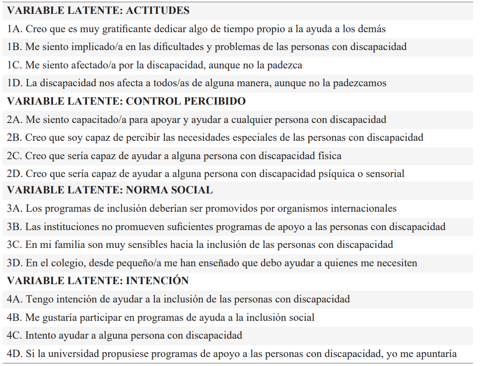
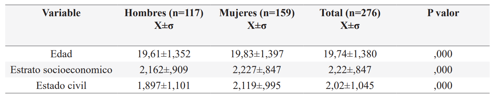
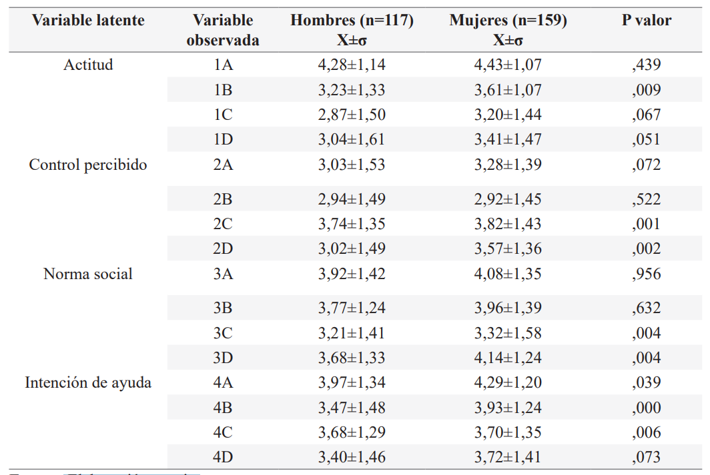
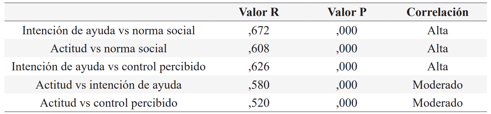

ISSN-PRINT 1794-9831 / E-ISSN 2322-7028
Vol. 19 Nº 3 / sep - dic, 2022 / Cúcuta, Colombia.
ISSN-PRINT 1794-9831 / E-ISSN 2322-7028
Vol. 19 Nº 3 / sep - dic, 2022 / Cúcuta, Colombia.
Resumen
Objetivo: Identificar las actitudes hacia la discapacidad en universitarios de Popayán, Colombia. Material y método: Estudio descriptivo correlacional de cohorte transversal, con un muestreo por conveniencia aplicado a 276 estudiantes. Se utilizó un instrumento validado por Novo et al. (1), con un alfa de Cronbach superior a ,75 donde se diferencian tres componentes relacionados con las actitudes de estudiantes. En el manejo estadístico se identificó la normalidad de la muestra y se aplicaron estadísticas descriptivas de tendencia central y dispersión; la relación entre las variables se realizó con la estadística de Pearson (p<,05). Resultados: Se encontró una actitud positiva frente a la discapacidad, estadísticamente significativa (p=,052); esta se relacionó con las intenciones de los estudiantes de vincularse con los procesos de discapacidad. También se evidenció que las mujeres tienen una mayor actitud hacia las personas con discapacidad. Sin embargo, se encontró que desde la percepción de los universitarios, en la institución faltan programas con los que se les prepare hacia la inclusión educativa. Conclusión: La actitud positiva se manifestó en mayor medida en las mujeres. Por otra parte, aunque la intención de ayuda a las personas con discapacidad está presente, se puede observar que los estudiantes no se visualizan con una discapacidad. Con respecto a la norma social es notoria una carencia de acciones por parte de las instituciones universitarias, así como de programas orientados a la población con discapacidad.
Palabras Claves: Educación; Discapacidad; Inclusión; Actitud; Estudiantes.
Abstract
Objective: Identify the attitudes towards disability in university students in Popayan-Colombia. Material and method: Descriptive correlational and cross-sectional study, with convenience samplings applied on 276 students. The instrument validated by Novo-Corti et al. was used, with a Cronbach’s alpha over 0,75 differentiating three components related with student attitudes. In the statistical analysis the normality of the sample was identified and descriptive statistics of central tendency and dispersion were applied; the relationship between the variables was measured with the Pearson correlation coefficient (p<,05). Results: A statistically significant positive attitude towards disability was found (p=,052); this was related to the intentions of students to engage in disability processes. It was also evidenced that women have a better attitude towards people with disabilities. However, it was found that, from the perspective of students, the university needs programs for educational inclusion. Conclusion: A positive attitude was shown to a greater extent in women. On the other hand, although the intention of helping people with disabilities is present, students do not visualize themselves with a disability. Regarding the social norm, it is notorious that there is a lack of action from university institutions, as well as programs orientated to people with disabilities.
KeyWords: Education; Disabilities; Inclusion; Attitude; Students.
Resumo
Objetivo: Identificar atitudes em relação à deficiência em estudantes universitários em Popayán, Colômbia. Material e método: Estudo de coorte transversal correlacional descritivo, com amostragem de conveniência aplicada a 276 alunos. Utilizou-se um instrumento validado pelo Novo-Corti et al. com um alfa de Cronbach maior que 0,75, onde três componentes relacionados às atitudes dos alunos são diferenciados. No manejo estatístico, foram identificadas as normalidades dos dados e foram aplicadas estatísticas descritivas de tendência central e dispersão; a relação entre as variáveis foi feita com a estatística de Pearson (p<0,05). Resultados: Verificou-se uma atitude positiva em relação à deficiência, estatisticamente significante (p=0,052); isso foi relacionado às intenções dos alunos de se relacionarem com os processos de deficiência. Também ficou evidente que as mulheres têm uma atitude maior em relação às pessoas com deficiência. No entanto, verificou-se que, a partir da percepção dos universitários, a instituição carece de programas com os quais estão preparados para a inclusão educacional. Conclusão: A atitude positiva se manifestou em maior medida nas mulheres. Por outro lado, embora a intenção de ajudar pessoas com deficiência esteja presente, pode-se observar que os alunos não se visualizam com deficiência. No que diz respeito à norma social, há notória falta de ações por parte das instituições universitárias, bem como programas voltados à população com deficiência.
Palavras-chave: Educação; Deficiência; Inclusão; Atitude; Alunos
Autor de correspondencia*
1* Fisioterapeuta, Doctora en Ciencias
Biomédicas, Docente Universidad del
Cauca. Popayán, Colombia.
najamoto@unicauca.edu.co,
Fisioterapeuta, Doctora en Ciencias
Biomédicas, Docente Universidad del
Cauca. Popayán, Colombia.
najamoto@unicauca.edu.co,  0000-0003-1953-4101
0000-0003-1953-4101
2* Economista,
Magister en Finanzas,
Docente Universidad Santiago de Cali.
Santiago de Cali, Colombia.
xmolanot@gmail.com, 0000-0002-8550-7331
3*
Fisioterapeuta, Magister en Deporte y
Actividad Física, Docente Universidad
del Cauca. Popayán, Colombia.
efportilla@unicauca.edu.co, 0000-0003-4331-7633
Recibido: 5 abril 2022
Aprobado: 25 julio 2022
Para citar este artículo / To reference this article / Para citar este artigo: Molano-Tobar NJ, Molano-Tobar DX, Portilla-Fernández EF. Actitudes hacia la discapacidad en Universitarios de Popayán-Colombia. 2022; 19(3):21-31. https://doi.org/10.22463/17949831.3271
© Universidad Francisco de Paula Santander.
Este es un artículo bajo la licencia CC-BY-NC-ND

Introducción
El reconocimiento a los derechos humanos es de vital importancia para una sociedad, por lo que la discapacidad se ha convertido en un punto relevante para la validación de las personas con discapacidad en los diversos espacios o instituciones.
El término discapacidad ha evolucionado desde la convención de las Naciones Unidas sobre derechos de las personas con discapacidad; al respecto la orientación se plantea desde el modelo social, que permite su interacción bajo la condición de igualdad (2).
Es así, como para Colombia se establece a través de la ley estatutaria 1618 de 2013, las garantías y el aseguramiento del ejercicio efectivo de los derechos de las personas con discapacidad, mediante la adopción de medidas de inclusión; la misma se reforzó con el decreto 1421 del 29 de agosto de 2017, en el cual se reglamenta la educación inclusiva y la atención educativa a la población con discapacidad.
Estos dos marcos normativos permiten establecer los lineamientos y parámetros para el acceso de las personas con discapacidad a la educación, repercutiendo directamente en la comunidad que los alberga en las dinámicas institucionales, que para este caso se relaciona con la educación superior.
Además, se ha logrado establecer que la discapacidad no es una limitación para participar activamente en la sociedad. La restricción corresponde a las barreras que la sociedad implanta al promover la estigmatización y la exclusión, actitudes negativas que propician barreras que obstaculizan el acceso a la atención médica, la educación, el empleo, los derechos cívicos y las oportunidades de socialización (3).
Saber qué es la discapacidad y cómo funcionan las personas con discapacidad, no es suficiente, se requiere de un diagnóstico sobre las actitudes sociales hacia ellas, como también los determinantes de esas actitudes y la posibilidad de cambiarlas (4). De ahí que sea necesario ante estas actitudes, creencias y comportamientos negativos las cuales afectan la salud de las personas, explicar su génesis desde su complejidad y sus determinantes.
En el campo de la psicología se establece que el concepto de actitudes, de acuerdo con Radlinska et al. (2), consta de tres componentes: uno cognitivo que alberga conocimientos y creencias; otro afectivo relacionado con lo emocional y motivacional; y un tercero referido a lo conductual que acoge lo motivacional o acción: intenciones conductuales. Desde este punto de vista, es necesario visualizar estos elementos en la interacción que los estudiantes universitarios efectúan hacia sus homólogos con discapacidad, pues según lo plantean Angenscheidt y Navarrete (5), un buen indicador de prácticas inclusivas corresponde a la actitud de la comunidad educativa.
Otro factor a tener en cuenta es que las personas a la vez que generan actitudes, están influenciadas por la intención, que en palabras de Rao y Gartin (6) se refiere a la disposición de adaptarse frente las personas con discapacidad.
Por lo anterior, se puede determinar que las políticas han dado paso a la inclusión de las personas con discapacidad a los procesos educativos. Por este motivo, se está preparando al profesorado en esta materia. Al respecto, algunas Universidades como las de Almería y Burgos han desarrollado avances en la identificación de las actitudes hacia las personas con discapacidad, lo que las ha llevado a replantearse que educar para atender las personas con discapacidad significa ejercer los principios de igualdad y equidad a que todo ser humano tiene derecho (7). De igual forma se están desarrollando estrategias de aprendizaje-enseñanza que dinamicen el trabajo para todos, con adaptaciones ambientales que beneficien a los estudiantes, el centro educativo y la comunidad en general.
Los entornos educativos que albergan a las personas con discapacidad, requieren de un proceso de sensibilización social; al mismo tiempo deben desarrollar acciones que contribuyan a suprimir las barreras que limitan el acceso y la exclusión. En tal sentido se requiere de un estudio sobre las acciones y las intenciones que los estudiantes universitarios deben manifestar frente a la discapacidad y a las personas que presentan esta situación.
Por otro lado, la actitud de los docentes acerca de la inclusión es un factor determinante para el éxito académico en el entorno del aula regular; al respecto, Sanhueza et al., (8) definen a la actitud como “la disposición o predisposición aprendida de una persona, para actuar de determinada manera ante un fenómeno, persona o situación y que se manifiesta de algún modo organizado mediante la experiencia y que influye u orienta la conducta con respecto a objetos o situaciones”. Es decir, que la actitud es un componente indispensable que debe incorporar la institución educativa y requiere, por tanto, de estudio por parte de la comunidad académica, al corresponderle estar en contacto real con las personas con discapacidad.
Conviene subrayar que las barreras psicológicas que manejan las personas hacia la discapacidad son invisibles, de ahí que sea necesario evidenciarlas y generar acciones que permitan una verdadera acción inclusiva, mediante estrategias de intervención que impacten en el desempeño académico frente a las personas con discapacidad, así como en su calidad de vida en general (9).
Por su parte, Fazio y Olson (10), establecen que el hecho de estar expuesto a una persona con discapacidad trae inmediatamente a la mente evaluaciones negativas. El perceptor no necesita tener el propósito de que ocurran estas reacciones, ni invertir ningún esfuerzo consciente para producirlas, pues son automáticas y en algunas situaciones es posible que las actitudes no siempre reflejen los verdaderos sentimientos de una persona. Por ello la implementación dentro del currículo de materias o seminarios relacionados con la discapacidad y la inclusión son esenciales para generar actitudes positivas por parte de la comunidad académica y así propiciar ambientes de inclusión (11).
En consonancia con lo planteado anteriormente, hay que propiciar acciones referentes a cómo tratar la discapacidad desde diferentes miradas, y ello incluye no solo normas y leyes, las cuales se han ido constituyendo (12), sino que también hay que impulsar una dinámica social institucional, que fomente acciones desde la comunidad académica hacia las personas con discapacidad.
Desde otro punto de vista, según estadísticas del Departamento Administrativo Nacional de Estadística (DANE) de Colombia, en el 2018 se estableció que el 19,4% de los colombianos presentaban alguna dificultad para realizar actividades diarias, cifra que aumentó con relación al 2015. Al respecto, solamente el 3,6% tienen acceso a la educación superior, y si a ello se le suman actitudes negativas, conllevaría a una mayor deserción de las personas con discapacidad (12).
Se estima que el departamento del Cauca presenta una alta incidencia de discapacidad, lo que representa de acuerdo a las estadísticas nacionales un indicador, razón por la cual las actitudes deben ser evaluadas por parte de las instituciones de educación superior con el objetivo de plantearse nuevas y mejores herramientas para contrarrestar los efectos negativos.
En coherencia con lo expuesto anteriormente se ha formulado el siguiente objetivo general.
Objetivo
Identificar las actitudes frente a la discapacidad de universitarios en Popayán-Colombia.
Materiales y Métodos
El presente trabajo tuvo un enfoque cuantitativo, de índole descriptivo correlacional, de cohorte transversal, donde se buscó identificar las actitudes e intenciones de los estudiantes hacia la discapacidad, en una universidad de carácter público. El estudio se realizó en el I periodo de 2021, aplicando el cuestionario de actitudes e intenciones descrito por Novo et al. (1), de manera virtual, por medio de un formulario Google, respetando la privacidad de los participantes.
El programa de actividad física formativa es una unidad transversal obligatoria para todos los estudiantes de la universidad. La matricula total de estudiantes correspondió para el I de 2021 a 980 que se constituyó en el universo. Se realizó un muestreo estratificado de tipo aleatorio, con un margen de error del 5% y nivel de confianza del 95%, obteniendo una muestra de 277 estudiantes. En cuanto a la participación de cada una de las 9 facultades se constituyeron estratos seleccionados al azar, conformando así 31 estudiantes por cada facultad.
Hay que agregar que los criterios de inclusión fueron: tener entre 15 y 24 años de edad, estar matriculado en alguno de los cursos que ofrece el “Programa de Actividad Física Formativa”, aceptar y firmar el consentimiento informado y para los menores de edad el asentimiento por parte del tutor legal. Los participantes que no cumplieron con estos requisitos se excluyeron del estudio, así como los que no diligenciaron la encuesta o no deseaban participar, quedando una muestra de 276 estudiantes.
Se aplicó el cuestionario dividido en dos segmentos. El primero se relaciona con la identificación personal y algunas características socioeconómicas donde se registraron aspectos como: la edad, características familiares y el estrato socioeconómico definido como “La estratificación social como forma en la que, en la mayoría de los países del mundo, clasifican a los hogares a través de diferentes criterios de categorización que no dependen de los ingresos que tenga una persona o familia, sino que se basan en las condiciones de la vivienda en la que dicho grupo de personas habita y el entorno o zona en la que se encuentra” (14). La segunda parte corresponde al cuestionario presentado en estudios de Novo et al. (1), el cual está estructurado en torno a 20 afirmaciones (Tabla 1), sobre las cuales los estudiantes han indicado su grado de acuerdo o desacuerdo, siguiendo una escala tipo Likert, en la que 1 significa en total desacuerdo y 5 acuerdo completo. Se evidencian como variables latentes la actitud, el control percibido, la norma social y la intención de ayuda. Para contrastar su fiabilidad se obtuvo un alfa de Cronbach superior a ,75, indicando un nivel adecuado de consistencia interna para la población evaluada.
Tabla 1. Cuestionario de Actitudes e intenciones hacia la discapacidad
Fuente: Novo, Muñoz y Calvo (13),
Se debe agregar que los datos fueron analizados con el programa Statistical Product and Service Solutions (SPSS) versión 24.0. Se comprobó la normalidad de la muestra mediante la prueba de Kolmogorov-Smirnov, indicando un cumplimiento con el supuesto de normalidad de la distribución de los datos respecto al sexo. Para determinar la correlación entre variables se aplicó chi cuadrado para variables nominales y el índice de correlación de Pearson para las variables numéricas (p < ,05); de la misma manera se determinaron las medidas de tendencia central y de dispersión de acuerdo con el tipo de variables.
El proyecto fue presentado a la universidad del Cauca y avalado por el Comité de ética, el cual acata las disposiciones de la Declaración de Helsinki, como el de la resolución 8430 del Ministerio de Salud de Colombia para el trabajo con humanos, puesto que la investigación es catalogada como sin riesgo. Adicional a ello, se solicitó el asentimiento firmado por parte de los tutores para los estudiantes menores de edad y la firma de un consentimiento posterior a la explicación de los objetivos del estudio, donde los participantes lo hicieron voluntariamente, luego de haber recibido la información correspondiente sobre los objetivos de esta investigación. Igualmente, se les indicó la garantía de la confidencialidad de su información y datos, teniendo en cuenta la Ley de Protección de Datos para Colombia (ley 1581 de 2012).
Resultados
La población de 276 estudiantes universitarios estuvo conformada por 117 hombres que correspondieron al 42,4% y 159 mujeres (57,6%), con una edad promedio de 19,74±1,380 años.
Respecto al estrato socioeconómico se pudo establecer que la población objeto de estudio, presentó una tendencia mayor para el estrato 2, seguido por el 3 y el 1. Es importante indicar que se encontró una significancia estadística (p=,000) entre la variable sexo y estrato socioeconómico, mientras que, al establecer comparaciones con las otras variables, estas no fueron relevantes. Respecto al estado civil de la población se halló que el 46% es soltera frente a un 36,2% en unión libre. La tendencia entre sexos indicó que las mujeres de esta población están en unión libre (n=74), mientras que los hombres en estado de soltería (n=62).
En la tabla 2 se aprecia los descriptivos por sexo de la población, mostrando una significancia estadística por cada variable.
Tabla 2. Descriptivos de las características sociodemográficas de la población
Fuente: Elaboración propia
En el grafico 1 se evidencia la diferencia de actitud de acuerdo a las facultades; desde esta perspectiva los estudiantes de salud y artes presentaron mejores actitudes frente a la discapacidad que las que manifestaron los estudiantes de derecho o ciencias contables.
Gráfico 1. Reporte general de las actitudes de los estudiantes por facultades
Fuente: Elaboración propia
En la tabla Nº3 se muestran las respuestas de los participantes frente a la pregunta sobre discapacidad, observándose con respecto a la variable de actitud una diferencia de promedio entre hombres y mujeres en la pregunta 1C (Me siento afectado/a por la discapacidad, aunque no la padezca), diferencia que estadísticamente no es significativa. De la misma manera se aprecia que los estudiantes de Educación, Artes y Salud manifiestan tener mejores actitudes con respecto a los de Derecho, Ciencias contables y administrativas.
Acerca del control que se percibe, se encontró que la pregunta 2B (Creo que soy capaz de percibir las necesidades especiales de las personas con discapacidad) es la más baja con relación a las otras, sin diferencia estadística.
En cuanto al aspecto que trata sobre las normas sociales y la vinculación de la comunidad en los procesos para atender a las personas con discapacidad, indica que las preguntas 3C (En mi familia son muy sensibles hacia la inclusión de las personas con discapacidad) y 3D (En el colegio, desde pequeño/a me han enseñado que debo ayudar a quienes me necesiten) tienen una significancia estadística notable con relación a los otros aspectos que tienen que ver con los organismos internacionales, como instituciones.
Respecto al parámetro de intención de ayuda presentado en la escala de evaluación, tiene una significancia estadística en la mayoría de sus respuestas, como una forma de colaborar en los procesos que se relacionan con la discapacidad.
Un hecho notorio presente en el cuestionario es el relacionado con algunas preguntas sobre las instituciones y los organismos internacionales, donde se responde indicando que los organismos internacionales deberían promover los programas de inclusión en un 54,7%; además se objeta que no promueven suficientemente los programas de apoyo a las personas con discapacidad en un 40,6%.
Tabla 3. Descriptivos de las variables latentes en la población de estudio
Fuente: Elaboración propia
Si se tiene en cuenta que la población se adaptó a la prueba de Kolmogorov-Smirnov, aplicando la estadística de Pearson (p<,05) para establecer la relación entre las variables, se logró precisar que existe una correlación moderada entre las variables latentes como se muestra en la tabla 4. Es necesario señalar que aunque se aplicó la estadística de Pearson a otras variables, estas no fueron relevantes, por tanto se muestran solamente las que tienen una correlación de moderado a alto.
Tabla 4. Correlación de las variables latentes
Fuente. Elaboración propia
Discusión
Está claro que la percepción y las actitudes hacia la discapacidad varían en función de las vivencias de las personas y la forma como la afrontan. Al respecto, se logró visualizar que los estratos 2 y 3 están más dispuestos en ayudar a las personas con discapacidad, con respecto a los extremos socioeconómicos, lo cual en palabras de Gonzales y Macías (15), es un problema social a enfrentar y requiere de la intervención desde diferentes ámbitos empezando por la comunidad académica, que en ocasiones se restringe por falta de conocimiento y de empatía.
Desde otro punto de vista, se observó que la población de universitarios tiene una tendencia a la soltería, pero según el sexo se pudo identificar que las mujeres tienden a estar en unión libre mientras que los hombres están solteros. Estos resultados concuerdan con otras investigaciones (16, 17), en donde se indica que las mujeres tienden filogenéticamente a estar en compañía, pero debido a los cambios actuales han optado por la unión libre con relación a estar casadas; situación que es diferente a la de los hombres quienes manifiestan una actitud desligada de los compromisos que trae consigo el estar casados o en unión libre; por tanto, prefieren mantener su libertad (18, 19).
De igual forma, el estudio permitió inferir que la inclusión de la población con discapacidad en la Universidad es un reto para el sistema educativo como para la sociedad en general, ya que las barreras son diversas y requieren de educación y comprensión, promoviendo una actitud positiva por parte de los estudiantes, lo cual concuerda con el estudio de Rello et al. (20), en donde se precisa que los estudiantes de algunos programas tienden a tener una actitud positiva hacia la discapacidad porque su perfil se relaciona con la calidad del contacto, haciéndolos más empáticos a la hora de relacionarse con este tipo de personas lo que es reforzado por otras investigaciones (21), al indicar que estudiantes de artes y salud, se convierten en agentes facilitadores de actitudes y comportamientos positivos hacia sus compañeros con discapacidad.
Por otra parte, se puede constatar que la incidencia del perfil profesional puede generar actitudes positivas frente a los discapacitados y ello es coherente con estudios de Miller et al. (22), en donde se indica que los programas que tienen prácticas y acciones sobre las personas, tienden a desarrollar una cierta sensibilidad y compenetración en relación con aquellas carreras cuyo objeto de estudio corresponde a otras áreas como las matemáticas o las ingenierías.
Otro aspecto que se evidenció en la población objeto de estudio se relaciona con el hecho de que el grupo de mujeres manifestó actitudes asertivas hacia las personas con discapacidad, lo cual es corroborado por los estudios realizados por Verdiales (23), en donde se comprueba que las mujeres en su rol de cuidadoras generan empatías que fomentan acciones hacia el bienestar físico como el emocional, lo cual coincide con el modelo social de comprensión y devoción; de la misma manera el hecho de tener arraigada la actitud maternal propicia que las mujeres tengan más acciones y actitudes positivas hacia las personas con discapacidad (24, 25).
Con respecto a la variable latente de control percibido, se observa que difiere significativamente de la percepción, puesto que los universitarios estarían dispuestos a apoyar y ayudar, pero con relación a la percepción se advierte una valoración inferior, lo cual está conforme con lo presentado por Gonzalez y Cortes (26), quienes concluyen que el estigma social radica en ver a la persona con discapacidad desde un componente de limitación e invalidez que lleva a efectuar acciones de ayuda y colaboración, pero que dista del hecho de verse con alguna discapacidad, lo cual genera conductas no muy positivas, es así como el estar en los zapatos del otro vuelve complicada la situación (27).
Asimismo, las respuestas asociadas con la variable latente de norma social, vinculada a la escuela y a las instituciones en los procesos de discapacidad, se determina que la sensibilidad desarrollada desde la escuela, está en consonancia con los procesos de inclusión que desde hace algún tiempo se vienen trabajando. Al respecto Solís y Borja (28), estipulan que la implementación de la práctica sobre la inclusión en la escuela necesariamente requiere de acciones que a futuro desencadenen en actitudes más positivas hacia la discapacidad, aspecto que corresponde a una percepción mejorada sobre la inclusión.
Por otra parte, se pudo deducir que un porcentaje de la población universitaria infiere que en las instituciones no se promueven programas sobre la inclusión, lo cual es congruente con los mencionado por Espinosa et al. (29), quienes indican que muchas de las instituciones de educación superior no tienen programas que fomenten la inclusión educativa y ello se incrementa con las barreras arquitectónicas que tienen algunas edificaciones y la falta de cualificación por parte del profesorado, lo que evidencia la necesidad de incorporar el tema sobre la inclusión en los entornos universitarios y fortalecer el papel de la universidad como agente continuador en la formación de los estudiantes con discapacidad (30).
Se puede agregar que los estudiantes indican que están dispuestos a vincularse a los procesos de acompañamiento a las personas con discapacidad, pero en palabras de Novo et al. (1), no solo las actitudes determinan las intenciones, sino que se deben generar estrategias y mecanismos de inclusión que vinculen a toda la comunidad universitaria y que al mismo tiempo se apropie del tema de la inclusión en la educación con beneficios específicos hacia las personas con discapacidad.
Lo planteado anteriormente señala que la actitud hacia la discapacidad requiere de un engranaje coordinado a través de políticas públicas, del esfuerzo de las instituciones y de la comunidad académica para fomentar espacios saludables y procesos que prioricen las necesidades reales de las personas con discapacidad.
Se sugiere que para futuros estudios se amplíen las respuestas a través de un estudio cualitativo que permita profundizar sobre las percepciones y las limitaciones acerca de la relación con las personas con discapacidad.
Conclusión
Agradecimientos
Agradecemos a la Universidad del Cauca y a la Vicerrectoría de investigación por gestionar recursos para el apoyo a este proceso investigativo. De la misma manera agradecemos a cada uno de los participantes que dieron sus percepciones de forma libre y abierta.
Conflicto de Interes
Los autores manifiestan no presentar ningún conflicto de interés.
Referencias Bibliográficas